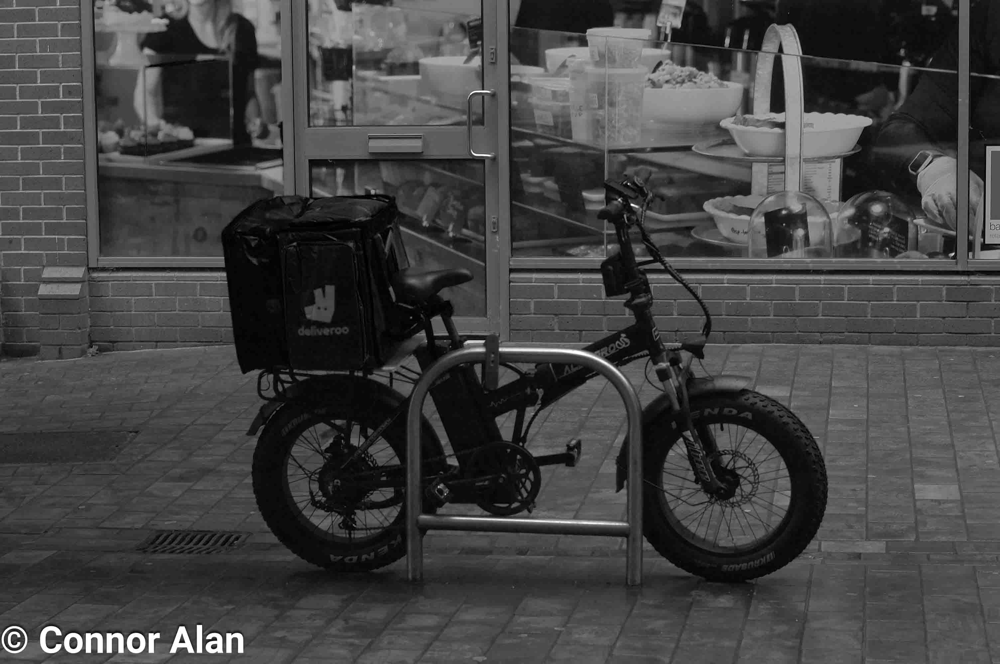
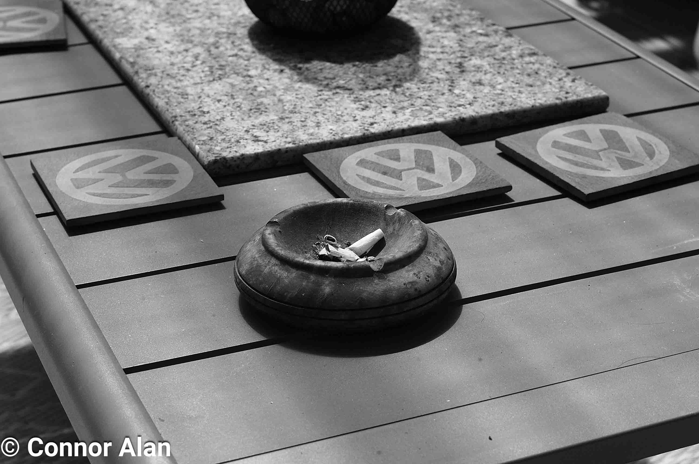
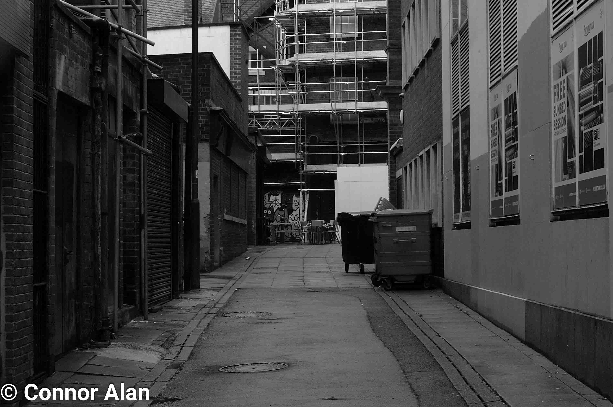
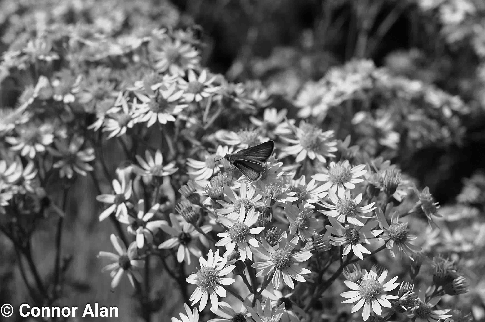
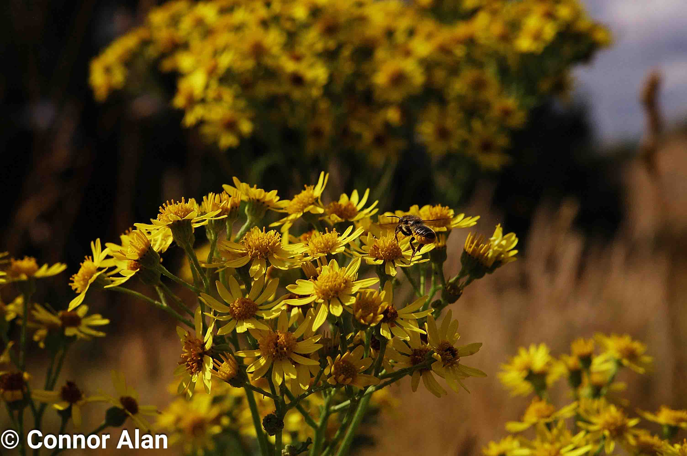
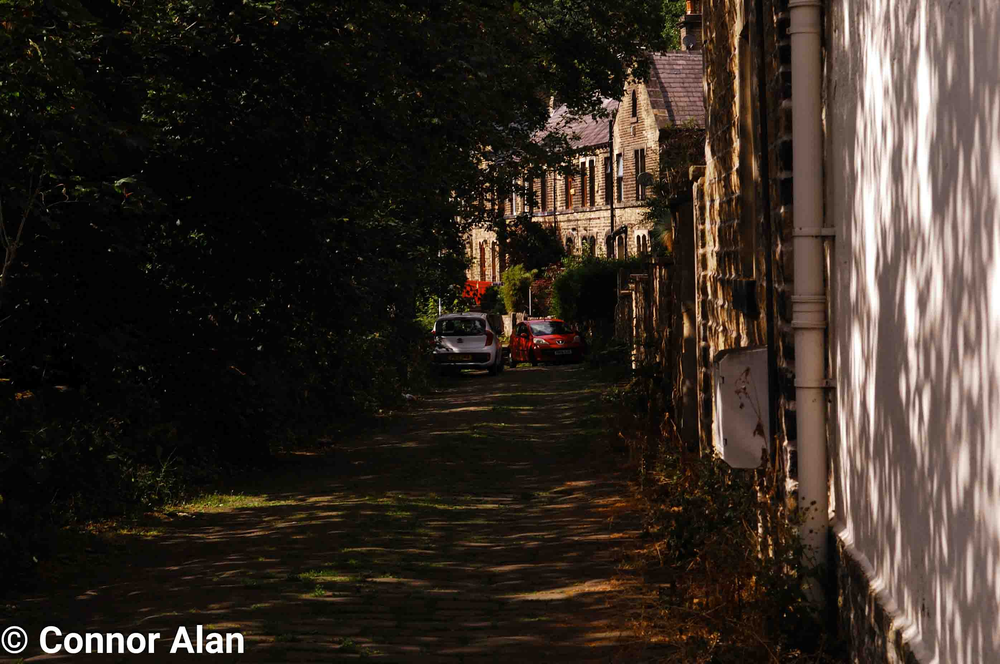
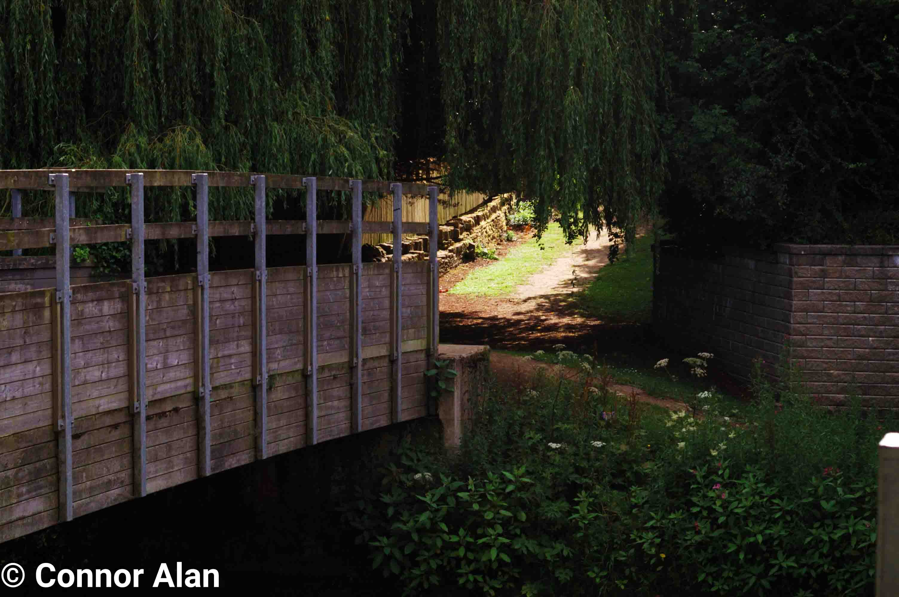
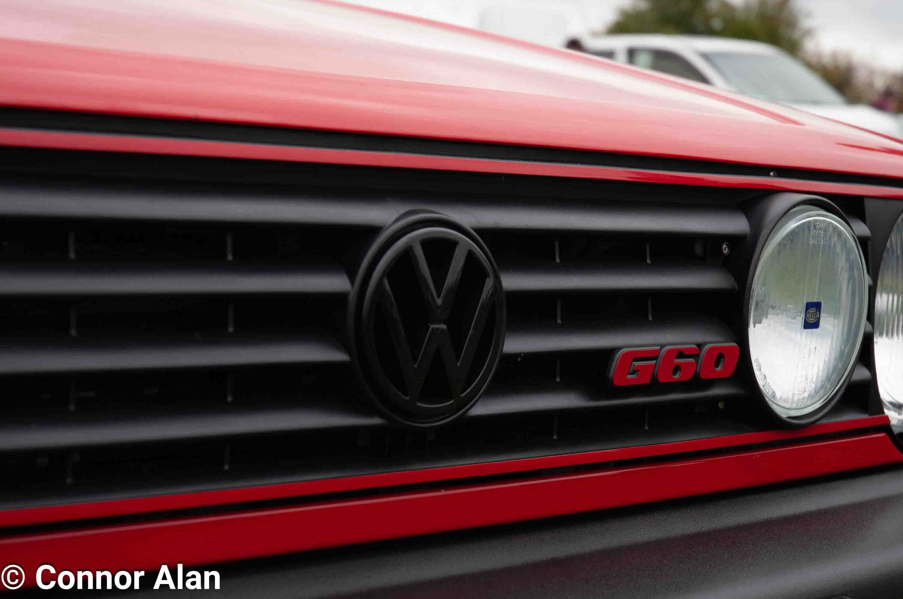
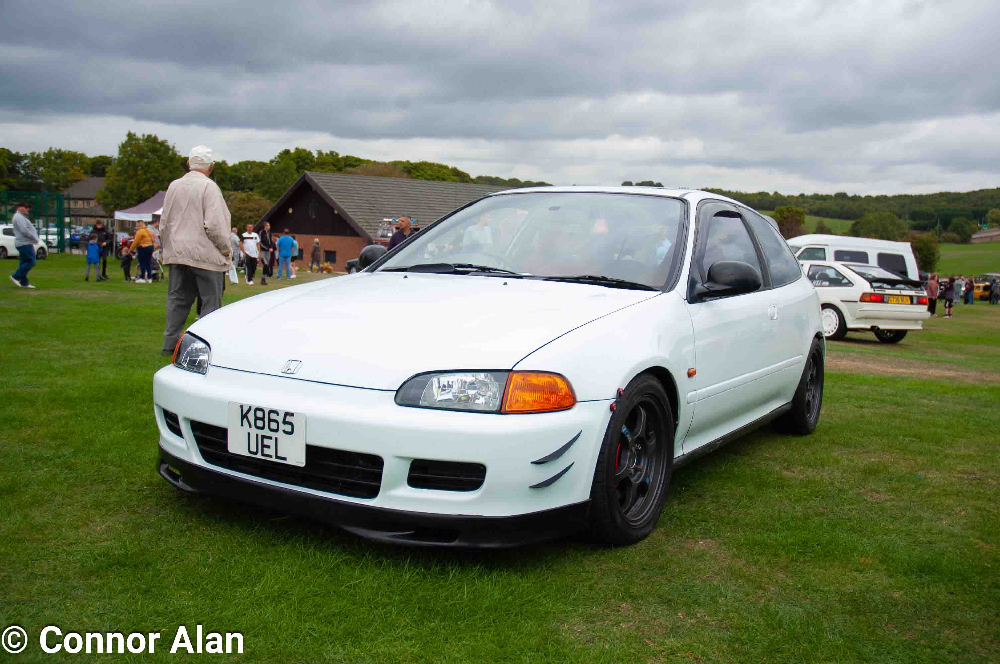

Introduction
I started taking photography seriously back in early 2022 after I found myself enjoying capturing moments with an old digital compact camera. After a few months of shooting on this camera I decided that it was worth taking the plunge and buying my own DSLR after experimenting with my Dad's Canon 1100D which I had experienced using back when I was a content creator.
My first DSLR was the Nikon D100 which I still use to this day. Some may believe that the D100 is obsolete as it is over 20 years old however, the D100 has a very film like sensor as it is quite an early digital camera which creates some unique picture. I tend to use vintage lenses for photography as I find manually adjusting the aperture and focus more engaging and makes the photographic experience more enticing.
Almost all of the photos you see in my portfolio are taken on this 20-year-old 6-megapixel camera and I hope it shows that it isn’t always about the equipment one uses but more about the photographer themselves.
Gear
Cameras: Nikon D100 & Canon EOS 300 (35mm)
Lenses: NIKKOR AI-S 50mm f1.4, Tokina 28mm f1.2 & NIKKOR AF-S DX 18-70mm f3.5-4.5
Filters: Jessops UV Filter & Hoya Skylight 1B Filter
Software: NX Studio & Adobe Photoshop
Portfolio
For ease of use, use these HTML anchors to jump to different areas of my portfolio!
Black and White DigitalColour
35mm
Black and White Digital Photography
All images under this section are taken on digital cameras and are then edited in post to be in black and white

Umbrella-Girl

Jesus Loves You!

Sat by the flowers
Lone-Bicycle

Lamp post lyrics
Ash Tray
Cat Street Art

Leeds City Center Skyline
Butterfly on a group of flowers

Stained Glass in Leeds Arcade
Colour
All images under this section are taken on digital cameras that have not been edited into black and white, however, they may be edited in post in order to enhance the colors of the photos or to remove any blemishes such as dust from the photos.
Group of Bees pollenating a bunch of flowers
Sunshining through the leaves onto a narrow street

Fleur cafe in Leeds

Flowers on a sunny day

Ford Escort

Overgrown path
Bridge over a small river
Close up of Volkswagen
Honda Civic EG6 at a Car Show
Mustang at a Car Show

Pocket Bully with black and white background

View of Emley Moor Mast

View of Emley Moor Mast towers with model in front

Steering wheel of a classic car
35mm
Photos under this section are taken using the Canon EOS 300 using color film; none of them have been edited in post. These are the exact scans that have been developed.

Multi-coloured bunting over a garden

Castle Hill on the Horizon

Skyline with Castle Hill in the distance

Sun shining over corn field

Swinging from tree

Overview of Syngenta
^ Back to Top ^